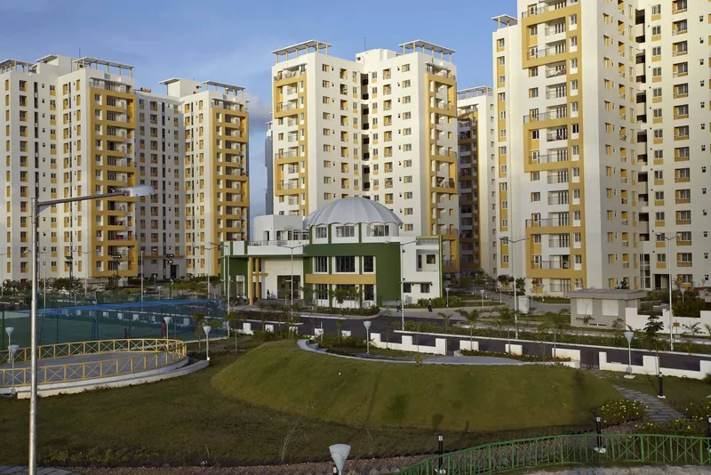
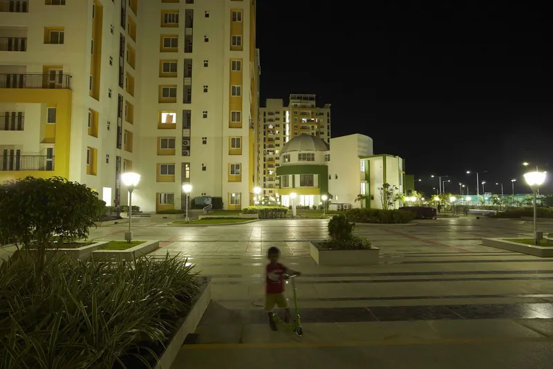
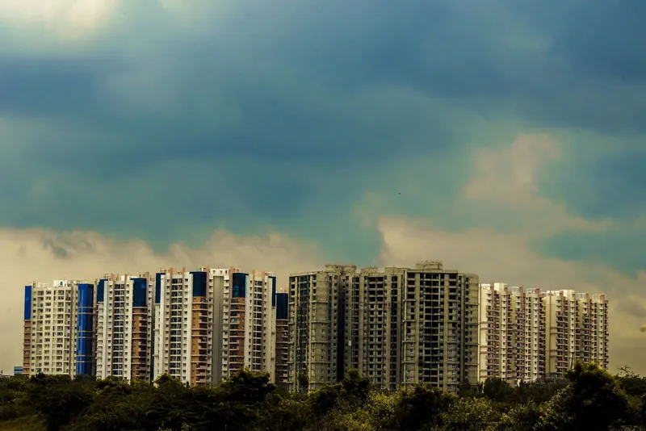
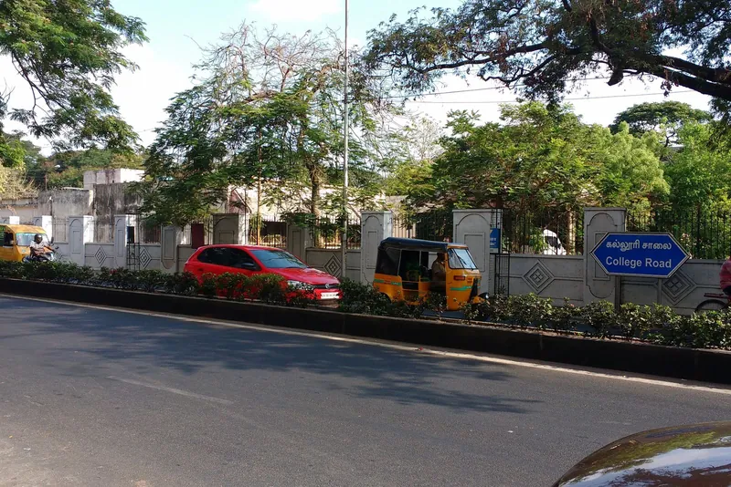
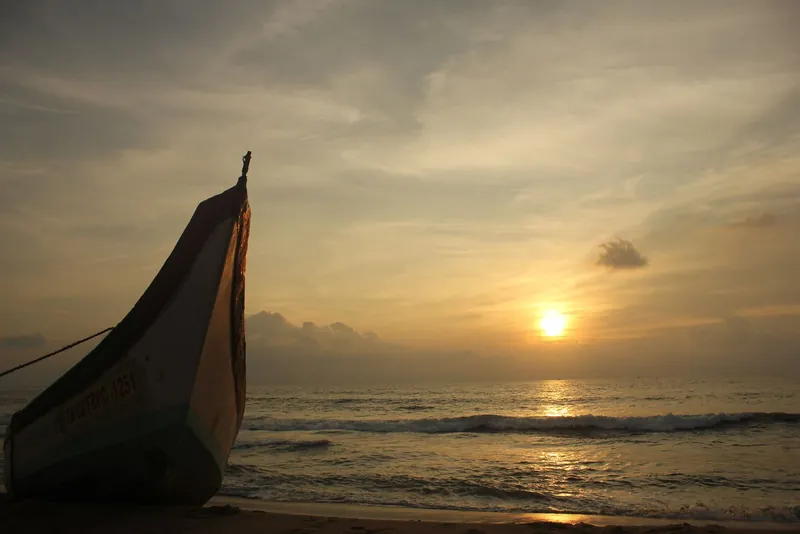

CC BY-SA 4.0Eden Park, Siruseri (OMR), Chennai
Photo by Zalapb, licensed under CC BY-SA 4.0. Original on Wikimedia Commons. Cropped and resized for this website.
PHOTO CREDITS
These photographs of Chennai are used under Creative Commons licences. Thank you to the photographers. Other architecture and interior photos on this website are representative and do not show specific listed homes.

CC BY-SA 4.0Photo by Zalapb, licensed under CC BY-SA 4.0. Original on Wikimedia Commons. Cropped and resized for this website.

CC BY-SA 4.0Photo by Zalapb, licensed under CC BY-SA 4.0. Original on Wikimedia Commons. Cropped and resized for this website.
 CC BY-SA 4.0
CC BY-SA 4.0
Photo by Daphinevadhera, licensed under CC BY-SA 4.0. Original on Wikimedia Commons. Cropped and resized for this website.

CC BY-SA 4.0Photo by Joel Samuel Raj, licensed under CC BY-SA 4.0. Original on Wikimedia Commons. Cropped and resized for this website.
 CC BY-SA 3.0
CC BY-SA 3.0
Photo by Ajayy99, licensed under CC BY-SA 3.0. Original on Wikimedia Commons. Cropped and resized for this website.
 CC BY 3.0
CC BY 3.0
Photo by VtTN, licensed under CC BY 3.0. Original on Wikimedia Commons. Cropped and resized for this website.

CC BY-SA 4.0Photo by TNSE Thiyagu Ganesh PDK, licensed under CC BY-SA 4.0. Original on Wikimedia Commons. Cropped and resized for this website.

CC BY 2.0Photo by Sridharan Chakravarthy, licensed under CC BY 2.0. Original on Wikimedia Commons. Cropped and resized for this website.